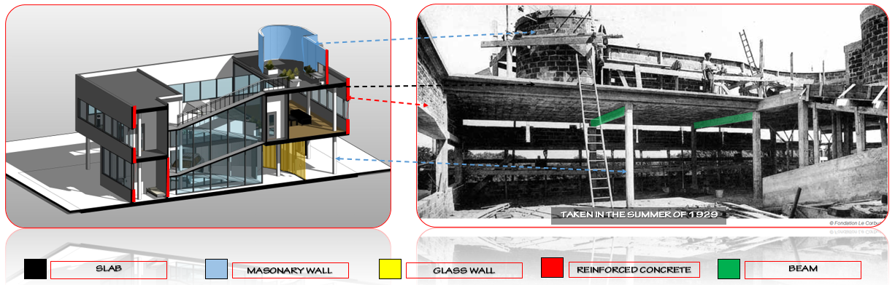
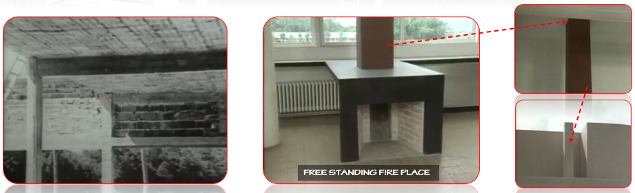

THERE IS A STRUCTURAL GRID OF 5 X 5 PILOTIS (MODIFI ED BECAUSE OF THE RAMP) WHICH
“BECOMES A RECTANGULAR SPACE ON THE FI RST FL OOR DUE TO THE SLIGHT PROLONGATION OF TWO OF ITS FACADES” (BALTANAS 2005).
THE COLUMN GRID EXTENDS THROUGH ALL THREE LEVELS,
SOMETIMES CONCEALED WITHIN WALLS, WHICH ARE NOT STRUCTURAL.
THIS GRID ALLOWS FOR A FREE FLOOR PLAN AND FACADE (TWO OF THE FIVE POINTS).
WALL
VILLA SAVOYES WALL IS
NON LOAD BEARING WALL
FRAMEWORK OF CONCRETE BEAM FILLED WITH BRICK BLOCKS
MADE OF GLASS, REINFORCED CONCRETE AND ESPECIALLY IN THE TERRACES SOLARIUM MADE OF MASONARY.
SLAB
VILLA SAVOYE BUILDINGS SLAB IS COMPOSED OF FLAT BLOCKS CEMENTED TOGETHER AND REINFORCED WITH STEEL RODS
ROOF
VILLA SAVOYES ROOF IS FLAT ROOF USED FOR GARDENING PERPOSE
BUT IT LEAKS SEVERAL TIMES DUE TO IMPROPER JOINT

5. BEAM
THE BEAM SUPPORTS THE SLAB BY TRANSFERRING THE LOAD THAT COMES FROM THE UPPER SLAB TO THE PILLOTIS OR COLUMNS

LIGHTING
LE CORBUSIER DESIGNED VILLA SAVOYE WITH GREAT INTELLECT AND AN UNDERSTANDING OF
HOW THE LIGHTING OF A PARTICULAR SPACE AFFECTS HOW IT IS PERCEIVED.
CORBUSIER STATED THAT THE WIDE, HORIZONTAL WINDOWS WRAPPED ALL THE WAY
AROUND THE PROPERTY WERE SIMPLY “TO PROVIDE LIGHT AND A VIEW”.
SANITARY
ON VILLA SAVOYE THERE ARE SEVERAL PIPING SYSTEMS WHICH THEY COLLECT WASTE WATER FROM DIFFERENT FIXTURES AND TUBS
NATURAL LIGHTING
IN THE LIVING ROOM, THERE IS A FLOOR TO CEILING GLASS WINDOW/DOOR ACROSS THE BACK WALL, LEADING OUT TO THE TERRACE.
THIS ALLOWED NATURAL LIGHT TO FLOOD ITS WAY INTO THE LIVING AREA.
IT WAS IMPORTANT TO CORBUSIER TO ALLOW AS MUCH NATURAL LIGHT INTO THE VILLA AS POSSIBLE.
LE CORBUSIER KNEW THAT HAVING A LOT OF NATURAL LIGHT WAS IMPORTANT AND BENEFICIAL TO OUR HEALTH.
HE THEREFORE CREATED THIS OPEN PLAN ‘FREE SPACE’ CONCEPT AND INCLUDED THESE ENORMOUS WINDOWS ON ALL WALLS OF THE HOUSE,
ALLOWING FOR AN ABUNDANCE OF NATURAL LIGHT TO ENTER THE VILLA.